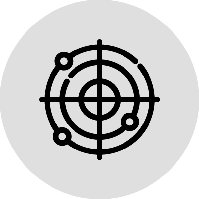
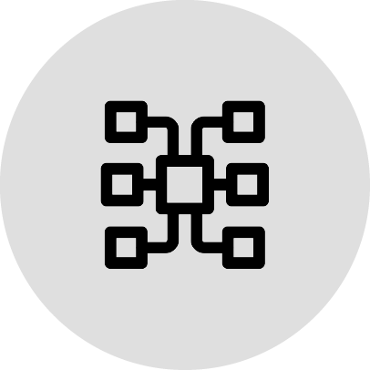
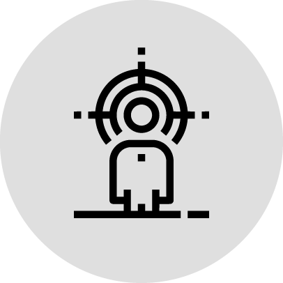

Las crisis
no avisan
¿Ya sabes qué harías?
Ordena lo que sabes, contrasta opciones y prepara cómo responder.
Entrar a Sala de Crisis
Sala de crisis es un asistente conversacional con IA.
i La IA te ayuda a pensar. La decisión sigue siendo tuya

Qué hace

Entender
Separar el ruido de lo que realmente importa.

Ordenar
Ver qué encaja, qué falta y qué necesita atención.

Preparar
Comparar opciones y trabajar qué comunicar.
i No necesitas llegar con todo claro. Para eso está la Sala.
Lo que la hace diferente
Sí, es un ChatGPT. La diferencia está en lo que se le exige.

No inventa certezas
Separa lo confirmado, lo que está sin confirmar y lo que todavía no sabemos.

No decide por ti
Puede ayudarte a comparar opciones y argumentarlas. La decisión pertenece a quien tiene la responsabilidad de tomarla.

No habla por ti
Puede ayudarte a preparar la comunicación. La voz y la responsabilidad final siguen siendo humanas.
¿Y si no es una crisis?
La Sala también sabe decir cuándo algo todavía no es una crisis. Y si puede escalar, te ayuda a prepararte antes de que lo sea.
Trazabilidad: de dónde sale
Construida desde la investigación,
no desde una lista de prompts.
i Investigación · evidencia · casos reales
Tener en cuenta
- Necesitas una cuenta de ChatGPT. La conversación ocurre allí, no aquí.
- No escribas nombres ni datos personales de nadie. Habla de cargos, no de personas.
- No se guarda solo. Si quieres conservarlo, cópialo antes de cerrar.
- Es el prototipo de una investigación, no un servicio contratado.